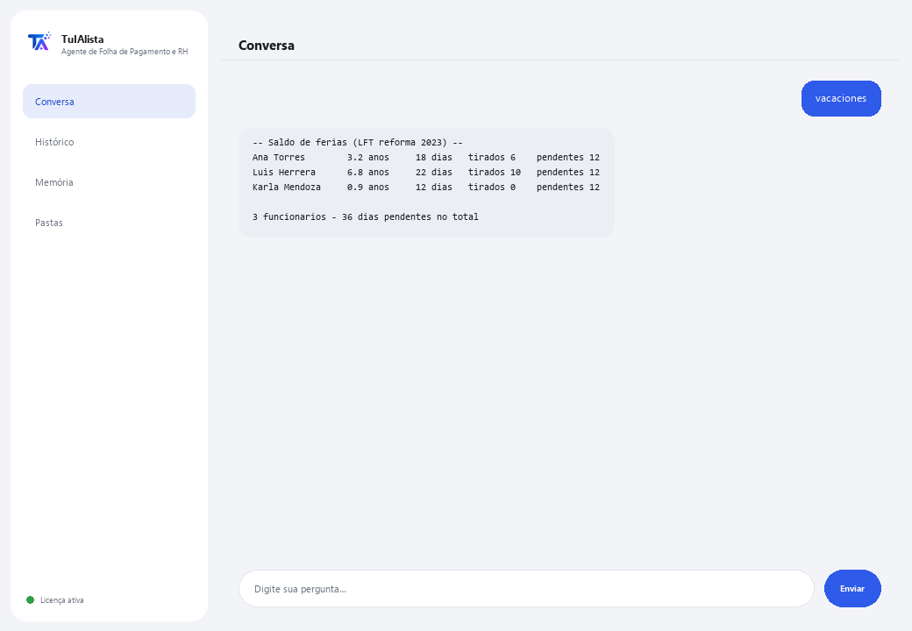

Agente de Folha de Pagamento e RH
Organiza seu quadro de funcionários, calcula férias conforme a lei trabalhista mexicana e monitora datas críticas de RH — sem que os dados saiam do seu computador.
O que resolve e o que você precisa?
Dados de funcionários são ultrassensíveis e não podem ficar na nuvem. Este agente os processa 100% no seu computador: carrega seu quadro, calcula o saldo de férias conforme a legislação trabalhista mexicana e avisa sobre datas críticas (fim de contratos, aniversários) antes que passem.
- Você precisa: sua chave de licença (TIA-XXXX-XXXX-XXXX-XXXX) e seu quadro de funcionários em Excel ou CSV. Nada de Python nem conhecimento técnico.
- Primeiro resultado em menos de 5 minutos: instala, ativa, escolhe sua pasta e roda vacaciones para ver o saldo de cada funcionário.
- Os dados dos seus funcionários nunca saem do seu computador — o cálculo roda localmente.
soporte@tuialista.com ou acesse tuialista.com/soporte — normalmente respondemos no mesmo dia útil.1 O que este agente faz
Você aponta para a pasta com seu quadro de funcionários (Excel ou CSV) e ele:
- Carrega os dados dos funcionários detectando as colunas automaticamente (nome, cargo, salário, data de admissão, tipo de contrato...), mesmo com nomes diferentes.
- Calcula o saldo de férias conforme a Lei Federal do Trabalho do México (reforma “Vacaciones Dignas” de 2023).
- Avisa sobre datas críticas: fim de contratos e aniversários de trabalho próximos.
- Gera um resumo de folha (total, média, por departamento e tipo de contrato).
- Lista aniversários próximos para reconhecimentos.
- Alerta sobre contratos a vencer.
- Gera um relatório de quadro (admissões, desligamentos, headcount por área).
- Responde perguntas de RH com contexto anonimizado.
O resultado: um RH organizado, com as datas sob controle e os dados sempre em casa.
2 Instalação (2 minutos)
Para Windows. Não precisa de internet o tempo todo nem enviar nada para a nuvem.
Baixe o instalador em tuialista.com/descargar (agente Folha de Pagamento) e abra-o. Ele cria um atalho na sua área de trabalho com o logo — não precisa de Python nem terminal.
Dê duplo clique no novo ícone. Cole sua chave de licença (você a recebeu por e-mail na compra) e clique em Ativar. Você verá um check verde quando for válida.
Selecione a pasta com seu quadro de funcionários e clique em Começar a usar o agente. Na próxima vez ele abre direto — lembra sua chave e sua pasta.
3 Como usar
O agente abre uma janela de chat, como um app de mensagens — não é uma tela preta de programador. Você escreve seu comando ou pergunta na caixa de texto abaixo, clica em Enviar (ou Enter), e a resposta aparece como uma mensagem, igual nesta imagem real:

Os comandos a seguir são as palavras que você pode escrever nessa mesma caixa de texto:
> vacacionesPor funcionário: seu tempo de casa, os dias de férias a que tem direito (tabela da LFT com a reforma 2023), os tirados e os pendentes.
> fechas [dias]Eventos de RH dos próximos N dias (30 por padrão): fim de contratos e aniversários de trabalho, ordenados por urgência. Ex.: fechas 45.
> nominaTotal da folha, salário médio, máximo e mínimo, e detalhamento por departamento e tipo de contrato — sem expor dados individuais sensíveis desnecessariamente.
> aniversarios [dias]Funcionários que fazem aniversário de trabalho nos próximos N dias (60 por padrão).
> contratos [dias]Contratos temporários a vencer nos próximos N dias (45 por padrão), incluindo os recém-vencidos.
> plantillaTotal do quadro, ativos, desligamentos, admissões do ano, e detalhamento por departamento e tipo de contrato.
> pergunta livre?Escreva qualquer dúvida em linguagem natural, ex.: quantos funcionários completam 5 anos neste trimestre?
> sairEncerra a sessão (exit também funciona).
Quer ver as 20 receitas completas com um exemplo real de cada uma? Consulte o Catálogo de receitas — um documento separado por ser extenso: catalogo_recetas.pdf junto com este manual, ou a versão interativa em tuialista.com/guia/nominas/recetas.
4 Exemplos de uso comum
Revisão mensal de RH
fechas 30 → contratos 45
Preparar as férias do ano
vacaciones
Relatório para a diretoria
nomina → plantilla
Uma consulta pontual
quem faz aniversário de trabalho no próximo mês?
5 Perguntas frequentes
Os dados dos meus funcionários são enviados para a internet?
Quais formatos ele aceita?
Preciso nomear as colunas de forma exata?
Como ele calcula as férias?
O cálculo de férias é juridicamente vinculante?
Ele expõe os salários individuais?
Em que idioma ele responde?
Ele modifica meu arquivo de funcionários?
Atualizei o quadro, ele reconhece?
Posso ter vários arquivos?
6 Solução de problemas
Não carrega os funcionários / diz “0 funcionários”
Detecta mal uma coluna
Os cálculos de férias não batem com o esperado
Diz “Licença inválida” ou pede para reconectar
“Nenhum provedor de IA configurado”
Nenhuma dessas soluções resolveu seu problema? Escreva para nós diretamente — teremos prazer em revisar com você.
soporte@tuialista.com ou acesse tuialista.com/soporte — normalmente respondemos no mesmo dia útil.7 Privacidade e confidencialidade
Os dados dos seus funcionários nunca saem do seu computador.
- O agente carrega e processa o quadro localmente, no seu próprio computador. Não envia dados de funcionários para nenhum servidor.
- O cálculo de férias, os relatórios de folha, as datas críticas e o headcount são calculados no seu computador.
- A única coisa que trafega pela internet é: (1) uma verificação de que sua licença está ativa — que não inclui dados de funcionários —, e (2) ao fazer uma pergunta livre, um contexto anonimizado (resumos agregados, sem expor salários individuais por padrão) é enviado ao motor de IA para redigir a resposta.